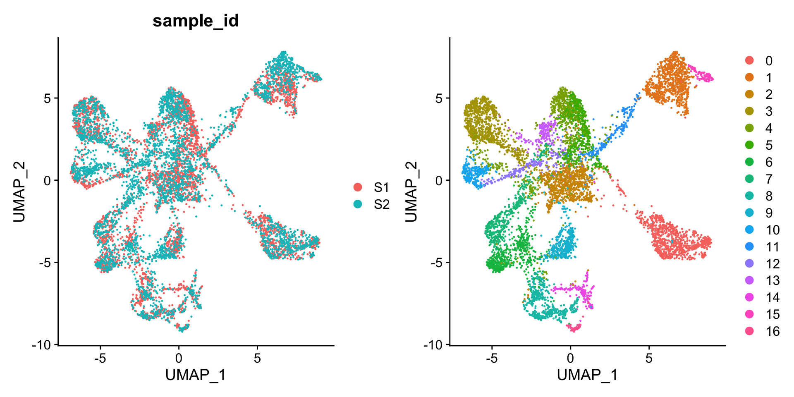
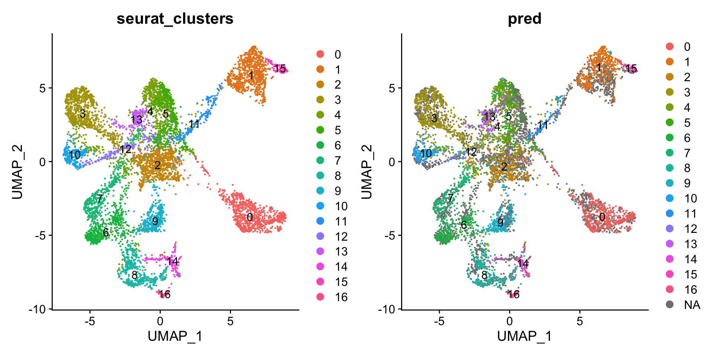

library(STUtility2)
library(tibble)HER2 label prediction
Load data
samples <- Sys.glob("~/BC_data/*/filtered_feature_bc_matrix.h5")
imgs <- Sys.glob("~/BC_data/*/spatial/tissue_hires_image.png")
spotfiles <- Sys.glob("~/BC_data/*/spatial/tissue_positions_list.csv")
json <- Sys.glob("~/BC_data/*/spatial/scalefactors_json.json")
infoTable <- tibble(samples, imgs, spotfiles, json, sample_id = c("S1", "S2"))
bc <- ReadVisiumData(infoTable)── Reading 10x Visium data ──ℹ Loading matrices:
✔ Finished loading expression matrix 1
✔ Finished loading expression matrix 2
ℹ Merging matrices:
✔ There are 33538 features and 7828 spots in the merged matrix.
ℹ Loading coordinates:
✔ Finished loading coordinates for sample 1
✔ Finished loading coordinates for sample 2
✔ Collected coordinates for 7828 spots.
── Creating `Seurat` object
✔ Expression matrices and coordinates are compatible
→ Created `Seurat` object
→ Created `Staffli` object
→ Loaded spatial data into the `Seurat` object
✔ Returning a `Seurat` object with 33538 features and 7828 spotsAnalysis
Run a simple analysis workflow
bc <- bc |>
NormalizeData() |>
ScaleData() |>
FindVariableFeatures() |>
RunPCA() |>
FindNeighbors(reduction = "pca", dims = 1:30) |>
FindClusters() |>
RunUMAP(reduction = "pca", dims = 1:30)Centering and scaling data matrixPC_ 1
Positive: C3, IGKC, TIMP1, IGLC2, IGHG1, IGHG3, IGHG4, C1QA, VIM, HLA-DRA
APOE, IGFBP7, C1R, COL6A2, BGN, HLA-DPB1, TRBC2, DCN, IGLC3, GSTP1
AEBP1, C1S, HLA-DRB5, CCL19, SFRP2, CCDC80, IGHM, HLA-DRB1, A2M, C1QB
Negative: TCEAL4, MORF4L2, HSPA1A, CTTN, TACSTD2, AGR2, UQCRQ, TXN, SNRPE, CDH1
COX17, CCND1, SEC61G, NPM1, TCEAL3, CERS2, CACYBP, ESR1, S100P, ANO1
TSPAN13, POLR2K, AGR3, H2AFZ, AQP3, EFNA1, LDLRAD4, TCEAL1, HSPE1, S100A16
PC_ 2
Positive: CSTA, TFF3, S100G, RAB11FIP1, H2AFJ, MGP, BAMBI, SCGB2A2, UGCG, MCCD1
SCGB1D2, ERLIN2, HK2, ABHD2, SNCG, FAM234B, TBC1D9, HEBP1, TFF1, FCGRT
SLC39A6, RERG, ST8SIA6-AS1, IER3, PVALB, CTPS2, SERPINA5, CPB1, RHOH, PLPBP
Negative: CXCL14, C16orf45, FN1, SH3BGRL, PRKACB, SPAG6, COL1A1, COL1A2, DEGS1, DNAJC1
ARPP21, TTLL12, CRAT, IL20, COL3A1, AC105999.2, CCND1, DEGS2, SUSD3, GNG5
SHISA2, FBN2, POSTN, BRINP3, ARMT1, MMP11, GFRA1, Z82214.2, LAGE3, MT1E
PC_ 3
Positive: CLDN5, ACKR1, AQP1, MGP, S100A6, TAGLN, CCL21, MYL9, GPX3, IGHG3
MT-ATP8, ALB, EFEMP1, IGLC2, CCDC80, MMRN1, VWF, SAA1, TFPI, PPP1R14A
MYH11, TINAGL1, CHRDL1, SFRP1, IGHG4, ADH1B, EHD2, KRT14, CALD1, PLAC9
Negative: HLA-C, HLA-B, TAP1, HLA-DPA1, LYZ, CXCL9, PSMB9, HLA-DQA1, HLA-DQB1, TMSB4X
HLA-DRA, HLA-DPB1, UBD, CD52, RARRES3, IFITM1, ITGB2, PSMB8, HLA-DRB5, TRAC
APOC1, RPL26, CTSS, HLA-DMB, C1QC, FCER1G, MIEN1, ACP5, HLA-DRB1, CD53
PC_ 4
Positive: APOC1, APOE, MUC1, CRIP1, CD52, PYCARD, LTB, GFRA1, CORO1A, MS4A1
TRBC2, CXCL13, CCL19, RAC2, C1QB, CXCL14, FCMR, HLA-DPB1, GZMK, VSTM2A
CD3D, FDCSP, TRBC1, SPIB, FYB1, CCL5, TBC1D10C, IL7R, AGR2, CD2
Negative: MGP, KRT14, KRT17, KRT5, TM4SF1, MMP7, S100A6, ZNF350-AS1, S100G, ACTA2
KRT6B, S100A2, APOD, COL4A1, EPAS1, COL4A2, MCAM, PRSS23, IGFBP7, ALB
STC2, PLAT, SPARC, CALD1, LDHA, MYL9, KRT37, JAG1, AC087379.2, TPM2
PC_ 5
Positive: CRISP3, SLITRK6, C6orf141, VTCN1, CRISP2, ABCC11, ABCC12, C2orf54, SERHL2, ECM1
CYP4B1, CEACAM6, AL121790.1, EFHD1, PDLIM1, PTGES, B4GALT1, GPR162, LINC01410, PIP
AC093001.1, DIO1, AZGP1, TPRG1, CRISP1, AL121974.1, NUPR1, RBM24, MESP1, S100A14
Negative: IFI27, CXCL14, SPAG6, COL2A1, ARPP21, TTLL12, GFRA1, BRINP3, Z82214.2, THBS1
RPL14, TCIM, RPL26, VSTM2A, FBN2, CMTM8, PSD3, REPS2, TGM2, HLA-B
IGHE, SLC7A2, RMND1, KCNMA1, NKAIN1, CGA, RPS3A, DEGS1, LMCD1, MYEOV Computing nearest neighbor graphComputing SNNModularity Optimizer version 1.3.0 by Ludo Waltman and Nees Jan van Eck
Number of nodes: 7828
Number of edges: 285742
Running Louvain algorithm...
Maximum modularity in 10 random starts: 0.8772
Number of communities: 17
Elapsed time: 0 secondsWarning: The default method for RunUMAP has changed from calling Python UMAP via reticulate to the R-native UWOT using the cosine metric
To use Python UMAP via reticulate, set umap.method to 'umap-learn' and metric to 'correlation'
This message will be shown once per session23:23:59 UMAP embedding parameters a = 0.9922 b = 1.11223:23:59 Read 7828 rows and found 30 numeric columns23:23:59 Using Annoy for neighbor search, n_neighbors = 3023:23:59 Building Annoy index with metric = cosine, n_trees = 500% 10 20 30 40 50 60 70 80 90 100%[----|----|----|----|----|----|----|----|----|----|**************************************************|
23:24:00 Writing NN index file to temp file /var/folders/zb/1fj07x_5343fvs_k28gnm1z80002xs/T//RtmpvmsV7l/file699814beb11e
23:24:00 Searching Annoy index using 1 thread, search_k = 3000
23:24:02 Annoy recall = 100%
23:24:02 Commencing smooth kNN distance calibration using 1 thread with target n_neighbors = 30
23:24:03 Initializing from normalized Laplacian + noise (using irlba)
23:24:03 Commencing optimization for 500 epochs, with 339834 positive edges
23:24:14 Optimization finishedPlot clusters and sample IDs on UMAP embbedding
DimPlot(bc, group.by = "sample_id") | DimPlot(bc)
Get data to use for training and testing. We’ll use the top 1000 variable genes and add the cluster labels as the response variable.
# Model data
exprMat <- FetchData(bc, vars = VariableFeatures(bc)[1:1000])
# add response
modelData <- cbind(cluster = bc$seurat_clusters, exprMat)Create a model recipe using the tidymodels recipes R package:
assign cluster an outcome role
assign all numeric variables a predictor role
remove predictors with zero variance
center data
scale data
add a PCA step to avoid modelling correlated predictors
library(recipes)Loading required package: dplyr
Attaching package: 'dplyr'The following objects are masked from 'package:stats':
filter, lagThe following objects are masked from 'package:base':
intersect, setdiff, setequal, union
Attaching package: 'recipes'The following object is masked from 'package:stats':
step# Create recipe
rec <- recipe(modelData) |>
update_role(cluster, new_role = "outcome") |>
update_role(all_numeric(), new_role = "predictor") |>
step_zv(all_predictors()) |>
step_center(all_predictors()) |>
step_scale(all_predictors()) |>
step_pca(all_predictors(), num_comp = 20)Create a model workflow using the tidymodels workflows R package. Here we’ll use a KNN spec from the tidymodels pasnip R package.
library(parsnip)
library(workflows)
# Create workflow
knn_spec <- nearest_neighbor(mode = "classification",
neighbors = 10, weight_func = "cos")
knn_wflow <- workflow() |>
add_model(knn_spec) |>
add_recipe(rec)Split data into training and testing data. We’ll split the data by sample.
# Split data
modelData_train <- modelData[bc$sample_id == "S1", ]
modelData_test <- modelData[bc$sample_id == "S2", ]Fit model to training dataset
# fit model
knn_fit <- knn_wflow |>
fit(modelData_train)Predict labels from testing dataset
# Predict
pred_res <- predict(knn_fit, modelData_test)Evaluate model
# Evaluate model
knn_testing_pred <-
predict(knn_fit, modelData_test) %>%
bind_cols(predict(knn_fit, modelData_test, type = "prob")) %>%
bind_cols(modelData_test %>% select(cluster))ROC AUC
library(yardstick)For binary classification, the first factor level is assumed to be the event.
Use the argument `event_level = "second"` to alter this as needed.# ROC AUC
knn_testing_pred %>%
roc_auc(truth = cluster, .pred_0:.pred_16, estimator = "hand_till")# A tibble: 1 × 3
.metric .estimator .estimate
<chr> <chr> <dbl>
1 roc_auc hand_till 0.973knn_testing_pred %>%
accuracy(truth = cluster, .pred_class)# A tibble: 1 × 3
.metric .estimator .estimate
<chr> <chr> <dbl>
1 accuracy multiclass 0.810Add predictions to Seurat object
df <- data.frame(pred = knn_testing_pred$.pred_class, row.names = rownames(modelData_test))
bc$pred <- df[colnames(bc), "pred", drop = TRUE]Plot predictions
DimPlot(bc, group.by = "seurat_clusters", label = TRUE) | DimPlot(bc, group.by = "pred", label = TRUE)